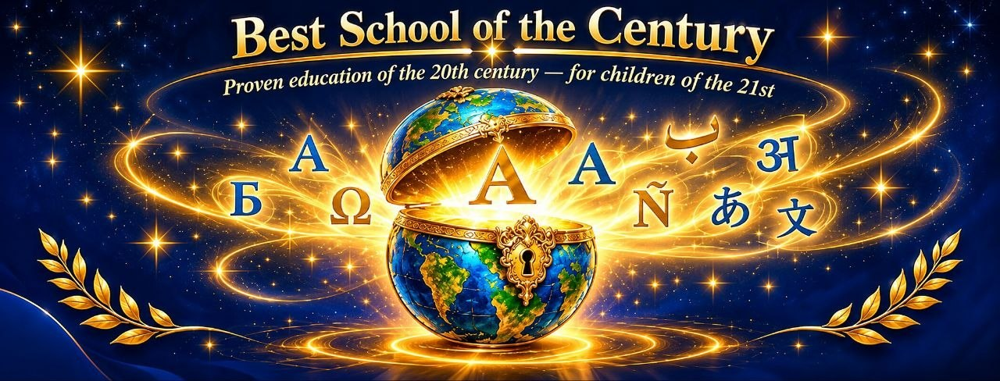

© 2026 Roza Truksane, 15.11.2026
Ụlọ akwụkwọ n'efu maka ụmụaka. Bot: @best_school_of_century_bot
Agụmakwụkwọ a nwalere nke narị afọ XX — maka ụmụaka nke narị afọ XXI.
«Ụlọ Akwụkwọ Kacha Mma nke Narị Afọ» bụ ụlọ akwụkwọ n'efu maka ụmụaka. Ihe omume ọmụmụ na-aga na Telegram bot @best_school_of_century_bot. Nkuzi Klaasị nke Mbụ n'asụsụ Russian akwadọla: ụbọchị ụlọ akwụkwọ 30 nke ọgụgụ, ide na ịgụ ọnụọgụgụ, yana ibe ọgụgụ na ibe ide ihe. Asụsụ ndị ọzọ na-aga n'ihu. Ụlọ akwụkwọ a ga-anọgide n'efu, anyị na-eji ike anyị arụ ya. Ị nwere ike inyere anyị aka: họrọ asụsụ ma kwado ka o pụta.
Bot na Telegram: t.me/best_school_of_century_bot
© 2026 Roza Truksane, 15.11.2026
Ngụkọta e nakọtara: $0 (kpakpando Telegram na USDT ọnụ). Asụsụ a ga-ebu ụzọ mepee bụ nke a ga-ebu ụzọ nakọta ego maka ya.
Asụsụ Rọshịa bụ ntọala nke usoro ọmụmụ a: ọ bụ na ya ka anyị ji wuo ọkpụkpụ usoro nkuzi maka asụsụ ndị ọzọ niile. Asụsụ Afrịka, nakwa Bekee na Frenchi dịka asụsụ ụlọ akwụkwọ n'Afrịka, anyị na-eme onwe anyị n'agbanyeghị ego ole anyị nwetara: n'ebe ahụ ka ọ na-esiri ụmụaka ike karịa inweta agụmakwụkwọ. Asụsụ ndị ọzọ anyị na-amalite mgbe asụsụ ahụ nwetara onye nkwado.
Klaasị ọ bụla na-esote na-efu ego karịa: ihe ọmụmụ ka ukwuu, ihe nkuzi siri ike karịa, akwụkwọ ka ukwuu, a na-achọkwa ụzọ ndị ọzọ karịa iji mee ka ihe ọmụma ruo mmadụ niile, gụnyere ndị nne na nna na-amaghị akwụkwọ.
Anyị ji ọnụ ahịa dị na 15.11.2026 gbakọọ ego ndị a. Ọnụ ahịa, ụgwọ ọnwa na ọnụego mgbanwe ego na-agbanwe, ya mere anyị na-enyochagharị ngụkọ ahụ, na-atụle mmụba ọnụ ahịa.
Maka asụsụ nwere onye nkwado, e gosiri ebumnuche asụsụ ọhụrụ; asụsụ ndị ọzọ anyị na-eme ha n'agbanyeghị ego ole e nyere, ihe ngụkọ na-egosi ego ole e nakọtara maka ha.
Nkwado bụ afọ ofufo, ọ bụghị ịzụ ihe. Ihe ọmụmụ ụlọ akwụkwọ bụ n'efu. Usoro · Iwu nzuzo
Aha — naanị ma onye ahụ kwere, ma ọ bụghị ya «Onye amaghị aha».
Otu ugboro n'ọnwa — obere akụkọ banyere ebe ego jere. Akụkọ mbụ — mgbe ego mbụ batara.
“Best School of the Century” is a free school for children. Lessons take place in the Telegram bot @best_school_of_century_bot. The Grade 1 Russian language course is ready: 30 school days of reading, writing and counting, with reading pages and handwriting practice pages. The other languages are in progress. The school stays free, and we are building it with our own efforts. You can help: choose a language and support its arrival.
«Лучшая школа века» — бесплатная школа для детей. Занятия идут в Telegram-боте @best_school_of_century_bot. Курс 1 класса по русскому языку готов: 30 школьных дней с чтением, письмом и счётом, страницами для чтения и прописями. Остальные языки в работе. Школа остаётся бесплатной, мы делаем её своими силами. Вы можете помочь: выберите язык и поддержите его появление.
« La meilleure école du siècle » est une école gratuite pour les enfants. Les cours ont lieu dans le bot Telegram @best_school_of_century_bot. Le cours de CP en russe est prêt : 30 jours d'école avec lecture, écriture et calcul, avec des pages de lecture et des cahiers d'écriture. Les autres langues sont en cours de préparation. L'école reste gratuite, nous la construisons par nos propres moyens. Vous pouvez aider : choisissez une langue et soutenez sa création.
«La Mejor Escuela del Siglo» es una escuela gratuita para niños. Las clases se dan en el bot de Telegram @best_school_of_century_bot. El curso de 1.º de primaria en ruso ya está listo: 30 días de escuela con lectura, escritura y cálculo, con páginas de lectura y cuadernillos de caligrafía. Los demás idiomas están en preparación. La escuela sigue siendo gratuita y la hacemos con nuestras propias fuerzas. Puedes ayudar: elige un idioma y apoya su llegada.
«A Melhor Escola do Século» é uma escola gratuita para crianças. As aulas acontecem no bot do Telegram @best_school_of_century_bot. O curso do 1.º ano em russo está pronto: 30 dias de escola com leitura, escrita e contas, com páginas de leitura e cadernos de caligrafia. Os outros idiomas estão em andamento. A escola continua gratuita, e nós a fazemos com as nossas próprias forças. Você pode ajudar: escolha um idioma e apoie a sua chegada.
„Die beste Schule des Jahrhunderts“ ist eine kostenlose Schule für Kinder. Der Unterricht findet im Telegram-Bot @best_school_of_century_bot statt. Der Kurs für die 1. Klasse in Russisch ist fertig: 30 Schultage mit Lesen, Schreiben und Rechnen, mit Leseseiten und Schreibheften zum Üben. Die anderen Sprachen sind in Arbeit. Die Schule bleibt kostenlos, wir bauen sie mit eigenen Kräften auf. Sie können helfen: Wählen Sie eine Sprache und unterstützen Sie, dass sie entsteht.
«Yüzyılın En İyi Okulu» çocuklar için ücretsiz bir okuldur. Dersler Telegram botu @best_school_of_century_bot üzerinden yapılır. Rusça 1. sınıf kursu hazır: okuma, yazma ve sayma içeren 30 okul günü, okuma sayfaları ve yazı defterleriyle birlikte. Diğer diller üzerinde çalışıyoruz. Okul ücretsiz kalıyor, onu kendi imkânlarımızla yapıyoruz. Siz de yardım edebilirsiniz: bir dil seçin ve ortaya çıkmasına destek olun.
«Sekolah Terbaik Abad Ini» adalah sekolah gratis untuk anak-anak. Pelajaran berlangsung di bot Telegram @best_school_of_century_bot. Kursus kelas 1 untuk bahasa Rusia sudah siap: 30 hari sekolah dengan membaca, menulis, dan berhitung, lengkap dengan halaman bacaan dan buku latihan menulis. Bahasa lainnya sedang dikerjakan. Sekolah ini tetap gratis, dan kami membangunnya dengan kemampuan kami sendiri. Anda bisa membantu: pilih satu bahasa dan dukung kehadirannya.
«Shule Bora ya Karne» ni shule ya bure kwa watoto. Masomo yanafanyika kwenye Telegram bot @best_school_of_century_bot. Kozi ya Darasa la 1 kwa lugha ya Kirusi iko tayari: siku 30 za shule za kusoma, kuandika na kuhesabu, pamoja na kurasa za kusoma na za kujifunza kuandika. Lugha nyingine bado ziko kazini. Shule inabaki bure, tunaijenga kwa nguvu zetu wenyewe. Unaweza kusaidia: chagua lugha na uunge mkono kuipatikana kwake.
«Mafi Kyawun Makarantar Ƙarni» makaranta ce ta kyauta ga yara. Darussa suna gudana a cikin Telegram bot @best_school_of_century_bot. Kwas ɗin aji na 1 na harshen Rashanci ya shirya: kwanakin makaranta 30 na karatu, rubutu da lissafi, tare da shafukan karatu da na koyon rubutu. Sauran harsuna suna cikin aiki. Makarantar za ta ci gaba da zama ta kyauta, muna yin ta da ƙoƙarinmu. Kuna iya taimakawa: zaɓi harshe ku taimaka wajen samar da shi.
«Ilé-ẹ̀kọ́ Tó Dára Jùlọ Ní Ọ̀rúndún» jẹ́ ilé-ẹ̀kọ́ ọ̀fẹ́ fún àwọn ọmọdé. Àwọn ẹ̀kọ́ ń lọ lórí Telegram bot @best_school_of_century_bot. Ẹ̀kọ́ Kíláàsì kìíní ní èdè Rọ́ṣíà ti ṣetán: ọjọ́ ilé-ẹ̀kọ́ 30 pẹ̀lú kíkà, kíkọ àti ṣíṣírò, pẹ̀lú àwọn ojú-ìwé kíkà àti ti ìkọ̀wé. Àwọn èdè yòókù ń lọ lọ́wọ́. Ilé-ẹ̀kọ́ náà yóò máa jẹ́ ọ̀fẹ́, a sì ń ṣe é pẹ̀lú agbára wa. Ẹ lè ràn wá lọ́wọ́: ẹ yan èdè kan kí ẹ sì ṣètìlẹ́yìn fún bí yóò ṣe jáde.
«Ụlọ Akwụkwọ Kacha Mma nke Narị Afọ» bụ ụlọ akwụkwọ n'efu maka ụmụaka. Ihe omume ọmụmụ na-aga na Telegram bot @best_school_of_century_bot. Nkuzi Klaasị nke Mbụ n'asụsụ Russian akwadọla: ụbọchị ụlọ akwụkwọ 30 nke ọgụgụ, ide na ịgụ ọnụọgụgụ, yana ibe ọgụgụ na ibe ide ihe. Asụsụ ndị ọzọ na-aga n'ihu. Ụlọ akwụkwọ a ga-anọgide n'efu, anyị na-eji ike anyị arụ ya. Ị nwere ike inyere anyị aka: họrọ asụsụ ma kwado ka o pụta.
«የክፍለ ዘመኑ ምርጥ ትምህርት ቤት» ለልጆች ነፃ ትምህርት ቤት ነው። ትምህርቶች በTelegram ቦት @best_school_of_century_bot ውስጥ ይካሄዳሉ። የ1ኛ ክፍል የሩሲያ ቋንቋ ኮርስ ዝግጁ ነው፦ 30 የትምህርት ቀናት ንባብ፣ ጽሑፍና ሒሳብ ያላቸው፣ ከንባብ ገጾችና የፊደል ልምምድ ገጾች ጋር። ሌሎች ቋንቋዎች በሥራ ላይ ናቸው። ትምህርት ቤቱ ነፃ ሆኖ ይቀጥላል፤ እኛ በራሳችን ኃይል እየሠራነው ነው። እርስዎ መርዳት ይችላሉ፦ ቋንቋ ይምረጡ እና እንዲዘጋጅ ይደግፉ።
«Mana Barumsaa Jaarraa Hunda Caalu» manni barumsaa daa'immanii bilisaan kennamu dha. Barnoonni Telegram bot @best_school_of_century_bot irratti ni kennama. Koorsiin kutaa 1ffaa afaan Rusiyaatiin qophaa'eera: guyyaa barnoota 30, dubbisuu, barreessuu fi herregaa of keessaa qabu, fuulota dubbisaa fi barreeffamaa wajjin. Afaanonni kaan hojiirra jiru. Manni barumsaa bilisaan itti fufa, nuti humna keenyaan hojjenna. Isin nu gargaaruu dandeessu: afaan tokko filadhaa, akka argamuuf deeggaraa.
«Eteyelo ya Malamu Koleka ya Ekeke» ezali kelasi ya ofele mpo na bana. Mateya ezali na Telegram bot @best_school_of_century_bot. Mateya ya Kelasi ya 1 na monɔkɔ ya Russe esili kobongisama: mikolo 30 ya kelasi na kotánga, kokoma mpe kotánga motuya, elongo na mapaja ya kotánga mpe ya kokoma. Minɔkɔ mosusu ezali kosalama. Kelasi ekotikala ya ofele, tozali kosala yango na nguya na biso moko. Okoki kosalisa: pona monɔkɔ mpe lendisa ete ebima.
«Isikole Esihamba Phambili Sekhulu Leminyaka» yisikole samahhala sezingane. Izifundo ziqhubeka ku-Telegram bot @best_school_of_century_bot. Ikhosi yebanga loku-1 ngesiRashiya isilungile: izinsuku zesikole ezingu-30 zokufunda, ukubhala nokubala, namakhasi okufunda namakhasi okubhala. Ezinye izilimi zisaqhubeka. Isikole sihlala singamahhala, siyenza ngamandla ethu. Ungasiza: khetha ulimi ubuye usekele ukuvela kwalo.
«Kɛmɛsan Lakɔli Ɲumanba» ye denmisɛnw ka kalanso ye, min t'a sara. Kalan bɛ kɛ Telegram bot @best_school_of_century_bot kan. Rusukan klasi fɔlɔ kalan labɛnnen don: kalan don 30, kalan, sɛbɛnni ni jate ye, ani kalan ni sɛbɛnni ɲɛw. Kan wɛrɛw bɛ ka labɛn. Kalanso bɛna to fantan, an bɛ a kɛ an yɛrɛ ka fanga la. I bɛ se ka dɛmɛ kɛ: kan dɔ sugandi, i ka dɛmɛ a ka bɔ.
«Lekool bi Gën ci Xarnu bi» daara la bu amul ñaata ngir xale yi. Njàng mi dafay doon ci Telegram bot @best_school_of_century_bot. Kurs bu klaas bu njëkk ci làkku Riis bi sàkk na: fan 30 yu daara ak jàng, bind ak lim, ak xët yu jàng ak yu bind. Yeneen làkk yi ñu ngi ci liggéey. Daara bi dina des bu amul ñaata, ñuy defar ko ak sunu doole. Mën nga dimbali: tànnal benn làkk te dimbali ko mu feeñ.
«Yʋʋm-koabgã Karen-saalg sẽn Yɩɩd Fãa» yaa karen-zĩig ning b karemdẽ biis ka tɩ yãk ye. Karengo wẽnd Telegram bot @best_school_of_century_bot pʋgẽ. Klas a 1 karengo ne Rusi gomde sɩd n yaa tɩ: karem-daare 30, karengo, korgo la limbã, ne kaset a karengo la korgo. Gom-bʋs a taabã be tʋʋmdẽ. Karen-zĩiga na n kẽ n pa yãk ye, tõnd tʋmda ne tõnd mensã. Y tõe n sõng-d: yãk gom-bʋs a ye, la sõng-y n na n wa.